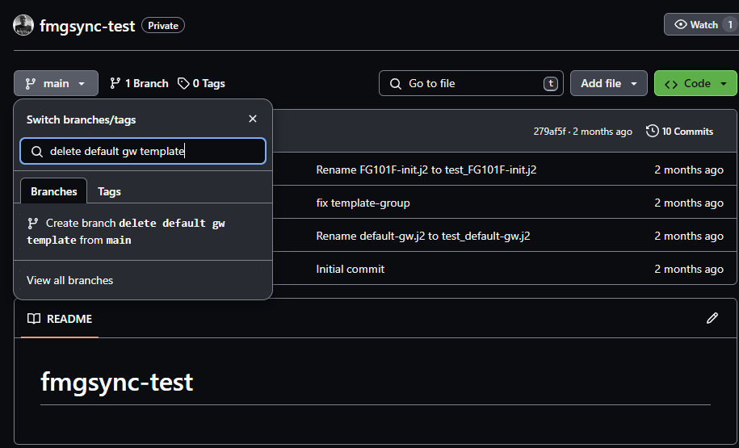
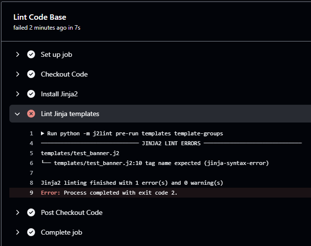
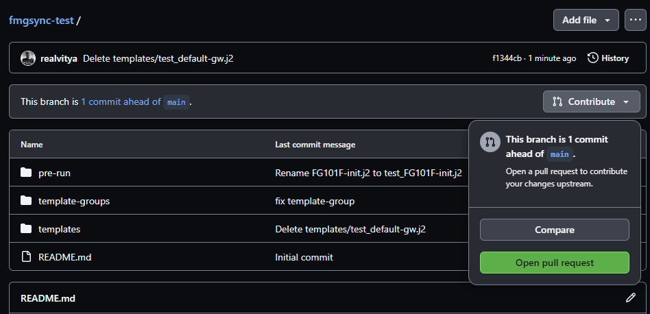
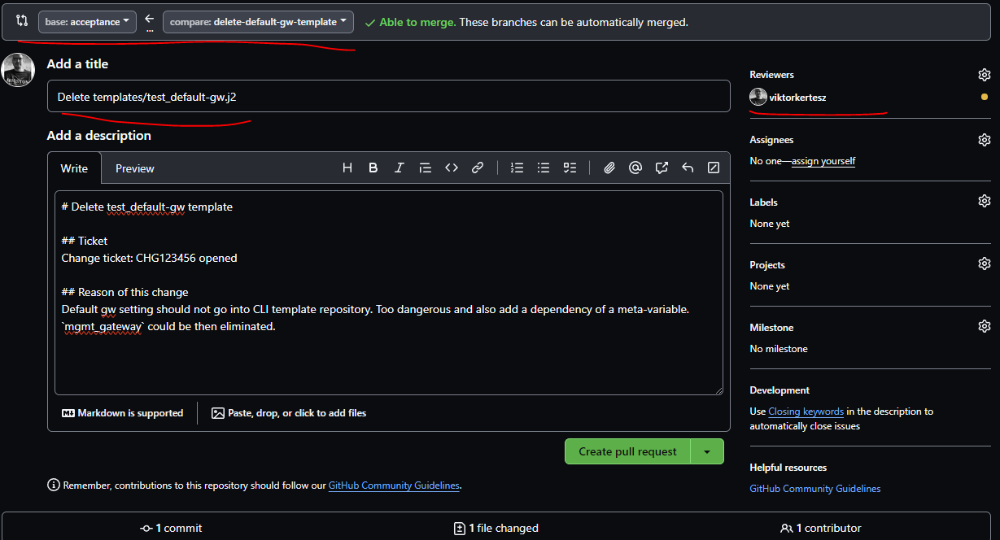
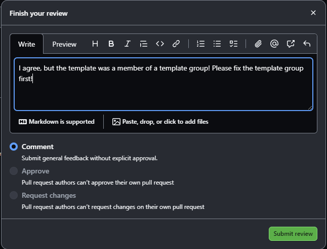
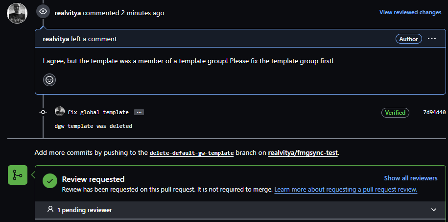
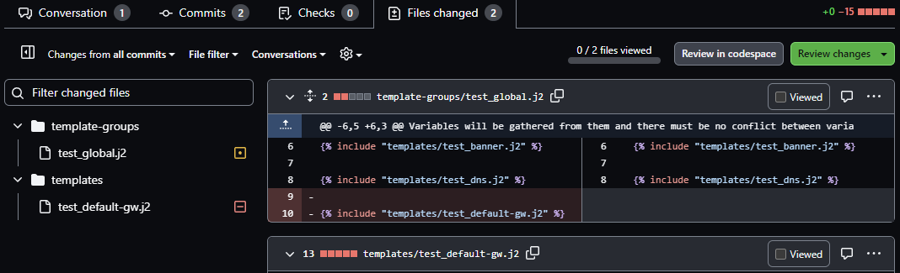

Developing templates#
This section tries to describe how an organization can use teamwork to meet the following requirements:
- Syntactically correct and standard formatted Jinja templates
- review and approval process
- testing in acceptance
- Merging changes to production
The steps needed to achieve the goal:
sequenceDiagram
autonumber
actor D as Developer
participant R as Repository
actor T as Team
participant FMG
participant FW
D->>R: Create Working Branch
D->>R: Make changes and push
R->>R: Action: Jinja linting
D->>R: Create Pull Request
R->>T: Send review request
loop Review process
T->>D: Send suggestions / review
D->>R: Make changes
end
T->>R: Approve
R->>FMG: Sync test
FMG-->FW: Checking FW states
R->>FMG: Sync
FMG->>FW: Install
FMG-->FW: Checking FW states againCreate working branch for change#
The branch name should reflect the change purpose or any relevant business process. It shouldn't be too general, like "My change".
Note
Git branching is a way of parallel working of a state and later it is possible to merge these changes back to the original. The default branch is named 'main' or 'master'. These shouldn't be used in the template repo though.
Example of creating a working branch:

Syntax checking#
Templates updated need preliminary testing to check syntax and indicate non-compliant Jinja documents. It's important to ensure template standard and correctness.
This check is done by GitHub action which triggers by pushing changes to a branch.

Create Pull Request#
This step is necessary to notify other reviewers to check the changes.
Tip
Create a Pull request template in GitHub so all necessary information will be pre-filled automatically by GitHub. More details on official GitHub docs.
Opening PR#
Example of opening a Pull Request:

Fill in PR details#
Then fill in the required information: 
It's important to select the appropriate source and destination branches at the top. In this case, the new working branch delete-default-gw-template will be merged back to acceptance. This is to ensure we touch the acceptance system first, and when the change went well with all the testing, there would be another PR which then would go from acceptance to production. Not all acceptance changes may go individually to the production, it may be desirable to collect a set of changes, test them separately and a batch PR could go to the production:
sequenceDiagram
participant W1 as Working1
participant W2 as Working2
participant A as Acceptance
participant P as Production
W1->>A: Changes1 to acceptance for testing
W2->>A: Changes2 to acceptance for testing
A->>P: Tested acceptance changes to the productionReviewers is also important, it must be set to people of group of people who has right to review, suggest and approve changes in the repository. Most probably these people are a team of more experienced staff about the device templates.
Review#
This is basically a 4-eye checking phase. This phase can last for long, especially if the change is complex and might require additional testing in lab or consultation with experts. Covering all GitHub features around Reviewing is not in the scope of this document. You can find more information at GitHub code review feature intro.
Workflow:
sequenceDiagram
actor D as Developer
participant R as Repository
actor T as Reviewer Team
D->>R: Developer initiates change
R->>T: GitHub notifies Reviewer
loop Review process
T->>R: Send comments, suggestions
D->>R: make fixes
end
T->>R: Set approval
D->>R: Merge PR to target repository A basic review response is like that:

In this case, we may choose the Request changes button and do not let the requestor to go ahead with merging.
All changes in the working branch delete-default-gw-template will be listed on the PR. Let's say the requestor fixed
the issue:

Now new review is needed. Reviewer can check the result of all changes by the files section:

Now it looks good, change can be approved and requestor can merge it back to acceptance.
Testing#
If GitHub action was assigned to Pull Requests, those will run whenever the source branch changes. This is to keep the state constantly up to date. If a change would cause an issue, the PR merge will be blocked until the issue is not fixed.
Merging pull request#
It is advisable to use merge with squashing. It means that the repository won't keep history of individual changes of the working branch but it will squash them into one single change. In the production and acceptance branches only the PR merge will be seen in the history.
Sync changes to FMG#
This can be done either manually on a console or by GitHub action. CLI log output can be found in the User Guide section.
Basic action to do such a sync can be found in the Creating Actions section.
Deploy changes to devices#
When all actions are successful, a final step is to install the new CLI templates to the devices. User Guide show example output for such a run. Even deploy job will do initial checks and looks for devices which requires the installation. Not all device in the automation group may be in scope for installation. It all depends on the assignment of those templates.